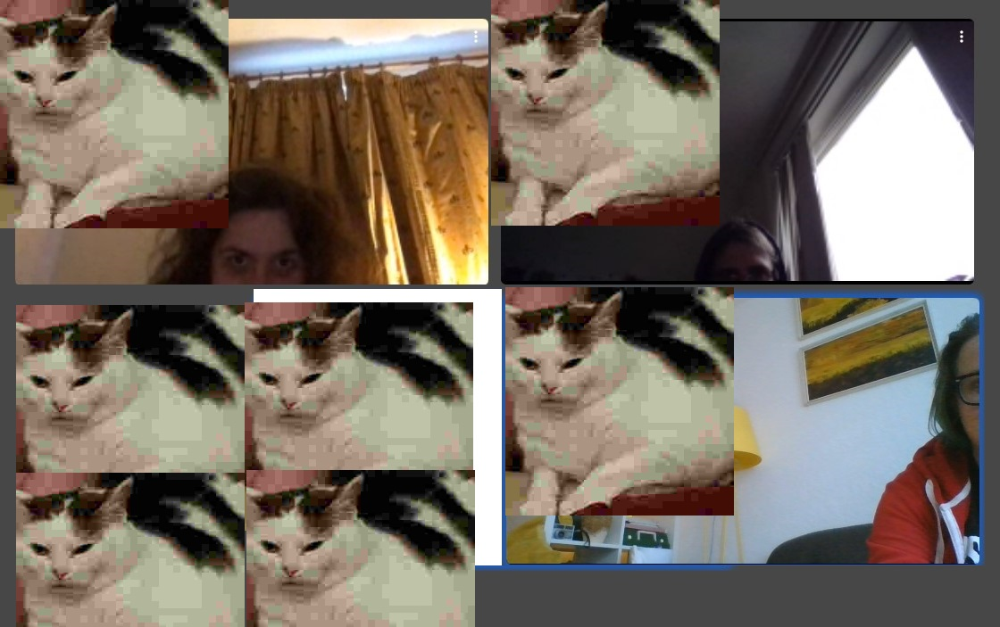

editrorial by Siobhan Carroll
I wrote a great editorial at 2am last week but have forgotten it.
contents
{% for work in collections.issue2sorted %}
{% if work.data.title != "TR2SH" %}
- {{ work.data.title }} by {{ work.data.author }}
{% endif %}
{% endfor %}
